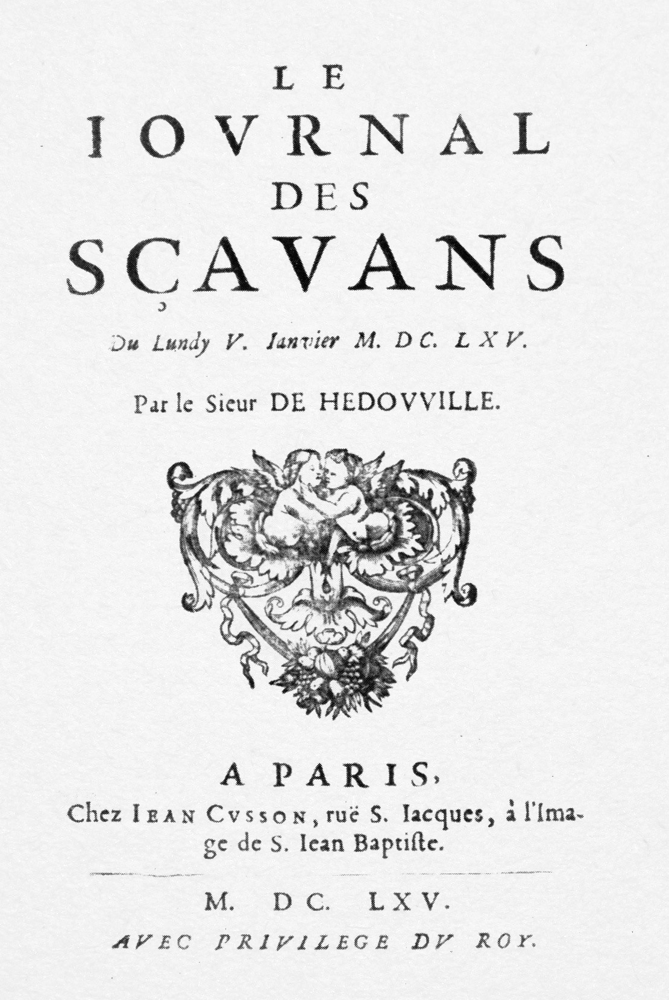
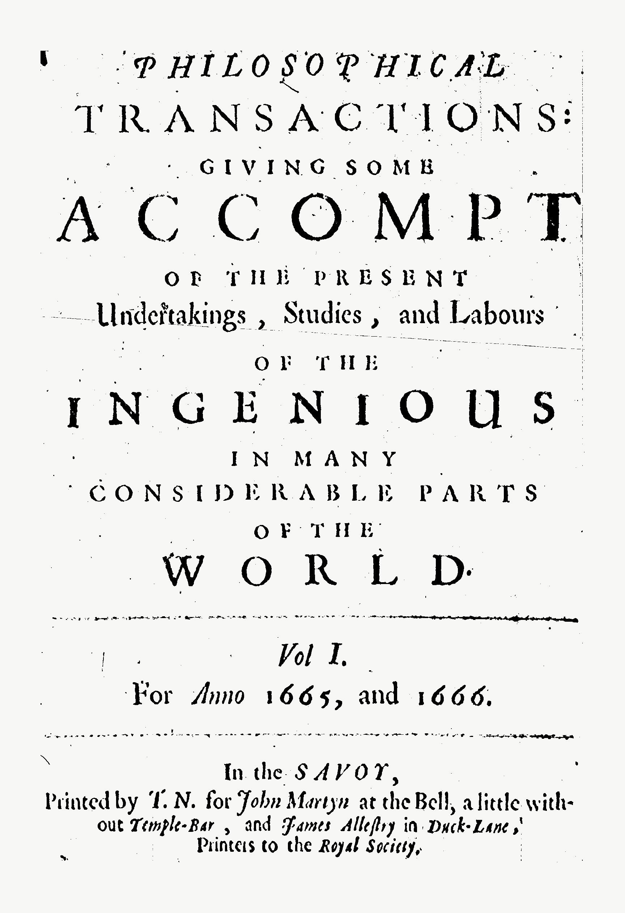
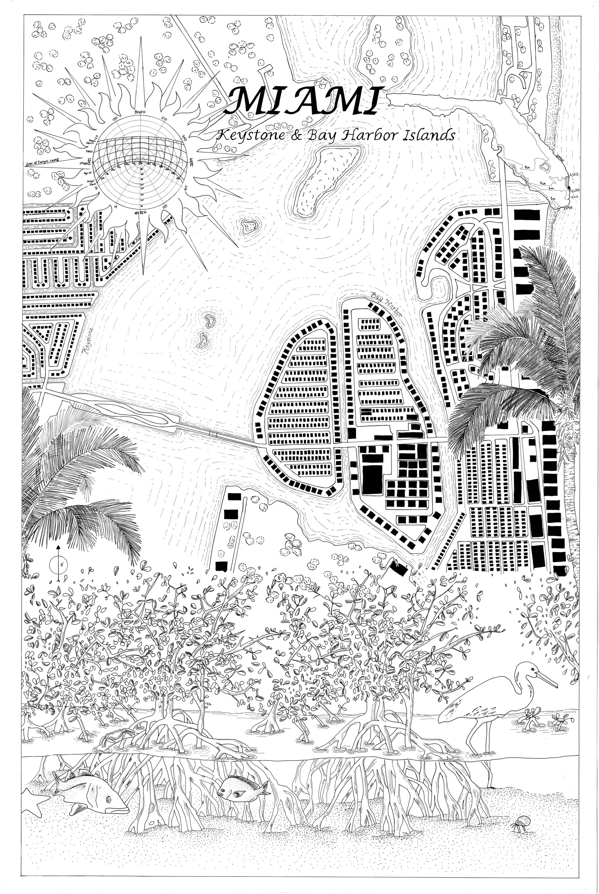
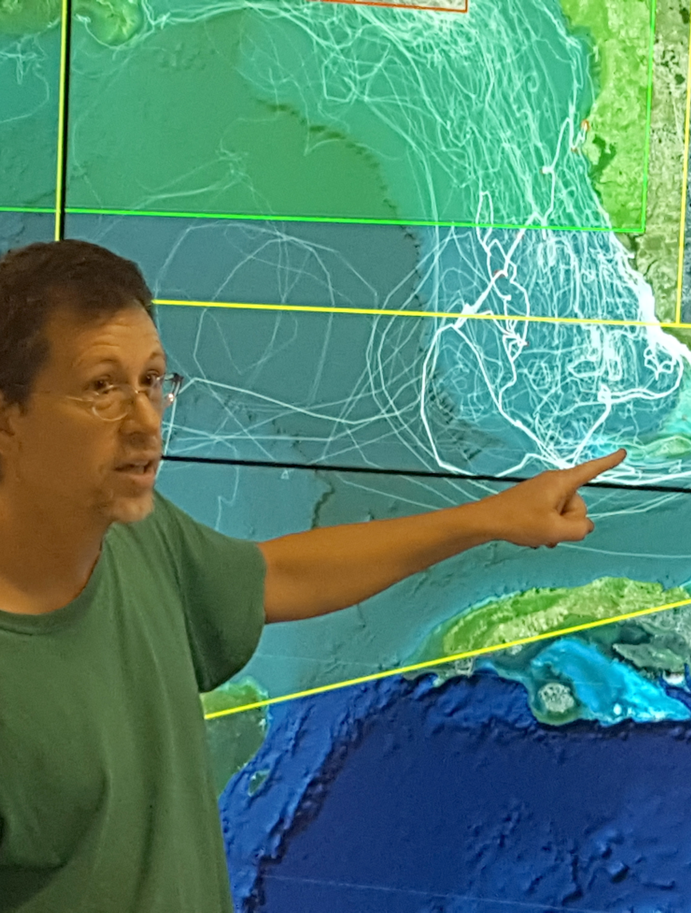

Opportunities,
Challenges,
Education
& Practice
Challenges,
Education
& Practice
Data Curation for Earth and Environmental Sciences
University of California Santa Barbara
University of California Santa Barbara
Timothy B Norris, PhD - tnorris@miami.edu
University of California Santa Barbara Library - July 23 2019
University of California Santa Barbara Library - July 23 2019
How Approaches Informed by
Guy Debord
& Joseph Singer
can frame the future of
Guy Debord
& Joseph Singer
can frame the future of
Data Curation for Earth and Environmental Sciences
University of California Santa Barbara
University of California Santa Barbara
Timothy B Norris, PhD - tnorris@miami.edu
University of California Santa Barbara Library - July 23 2019
University of California Santa Barbara Library - July 23 2019
Philosophical Transactions of the Royal Society


- - Oldenburg, Henry (1665). Philosophical Transactions of the Royal Society, March 6th. The Royal Society, London.
- - de Salio, Denis (1665). Journal des Sçavans, January 5. Paris.

a basic plan
Opportunities, Challenges, Education and Practice
- Data Curation
- Data Sharing
- Tangible Actions
- Data Curation Experience
- Data Science and the Way Forward
a basic plan
Opportunities, Challenges, Education and Practice
- Data Curation
- Data Sharing
- Tangible Actions
- Data Curation Experience
- Data Science and the Way Forward
a basic plan
Opportunities, Challenges, Education and Practice
- Data Curation
- Data Sharing
- Tangible Actions
- Data Curation Experience
- Data Science and the Way Forward
Data Curation Network - Mnemonic for Curation
CCheck files and read documentation (risk mitigation, file inventory, appraisal/selection)
UUnderstand the data, or try to ... (run files/environment, QA/QC issues, readmes)
RRequest missing information or changes (tracking provenance of processes and changes)
AAugment metadata for findability (DOIs, metadata standards, discoverability)
TTransform file formats for reuse (data preservation, conversion tools, data viz)
EEvaluate for FAIRness (licenses, responsibility standarads, metrics for tracking)
DDocument the curation process
UUnderstand the data, or try to ... (run files/environment, QA/QC issues, readmes)
RRequest missing information or changes (tracking provenance of processes and changes)
AAugment metadata for findability (DOIs, metadata standards, discoverability)
TTransform file formats for reuse (data preservation, conversion tools, data viz)
EEvaluate for FAIRness (licenses, responsibility standarads, metrics for tracking)
DDocument the curation process
Data Curation Network (2018). "Checklist of CURATED Steps Performed by the Data Curation Network." https://datacurationnetowrk.org
practice
FAIR Data
FFindable rich metadata with assigned DOI
AAccessible Metadata and data available across open protocols
IInteroperable Data and metadata represented with standard or easily understood data structures
RReusable metadata includes provenance and uses community accepted descriptions
AAccessible Metadata and data available across open protocols
IInteroperable Data and metadata represented with standard or easily understood data structures
RReusable metadata includes provenance and uses community accepted descriptions

Wilkinson, M. D., M. Dumontier, I. J. Aalbersberg, G. Appleton, M. Axton, A. Baak, N. Blomberg, J.-W. Boiten, L. B. da Silva Santos, P. E. Bourne, J. Bouwman, A. J. Brookes, T. Clark, M. Crosas, I. Dillo, O. Dumon, S. Edmunds, C. T. Evelo, R. Finkers, A. Gonzalez-Beltran, A. J. G. Gray, P. Groth, C. Goble, J. S. Grethe, J. Heringa, P. A. C. ’t Hoen, R. Hooft, T. Kuhn, R. Kok, J. Kok, S. J. Lusher, M. E. Martone, A. Mons, A. L. Packer, B. Persson, P. Rocca-Serra, M. Roos, R. van Schaik, S.-A. Sansone, E. Schultes, T. Sengstag, T. Slater, G. Strawn, M. A. Swertz, M. Thompson, J. van der Lei, E. van Mulligen, J. Velterop, A. Waagmeester, P. Wittenburg, K. Wolstencroft, J. Zhao and B. Mons (2016). The FAIR Guiding Principles for scientific data management and stewardship. Scientific Data, 3, 160018. doi: 10.1038/sdata.2016.18.
a basic plan
Opportunities, Challenges, Education and Practice
- Data Curation
- Data Sharing
- Tangible Actions
- Data Curation Experience
- Data Science and the Way Forward
Tangible Actions
Embedded Data Curation
- UM Libraries
- Hometown Maps (SOA with Gilda Santana and Abe Parrish)
https://scholar.library.miami.edu/hometownmaps/ - Measures Library (SOHNS with Victoria Mitrani and Vera Spika)
https://elcentro.sonhs.miami.edu/research/measures-library/index.html - Antillean Visions (Lowe Art Museum with Will Pestle, Ashlie White among others)
- Center for Computational Science
- Pulley Ridge (RSMAS with Peter Ortner, Chris Mader among others)
- The Turtlebox Project (NOAA with Paul Richards, Chris Mader among others)
- Las Flores Participatory Mapping (SOA with Chris Mader, Adib Cure, Carie Penebad among others)

Pulley Ridge Data Curation Experience
"represents a collaboration of more than thirty scientists at ten different universities and two federal laboratories (NOAA’s Atlantic Oceanographic and Meteorological Laboratory and Southeast Fisheries Science Center) pooling their expertise through NOAA’s Cooperative Institute for Marine and Atmospheric Studies at the University of Miami in coordination with the Cooperative Institute for Ocean Exploration, Research, and Technology at Florida Atlantic University."
NCCOS - Understanding Coral Ecosystem Connectivity in the Gulf of Mexico from Pulley Ridge to the Florida Keys - https://coastalscience.noaa.gov/project/coral-ecosystem-connectivity-gulf-florida-keys/
Pulley Ridge Decision Support Resource. https://mesophotic.ccs.miami.edu.
VirTu - Sea Turtle Density Estimator
a basic plan
Opportunities, Challenges, Education and Practice
- Data Curation
- Data Sharing
- Tangible Actions
- Data Curation Experience
- Data Science and the Way Forward
Curation Experience
GIS as Data Curation
- Quality metadata
- Proper sharing licenses/agreements
- Interdisciplinary problem solving
- Synthetic analysis and visualization
- Relevant applied science
Indeed, a well constructed GIS is a
special collection made purposefully to
curate cartographic exhibits with
dynamic geospatial data.
special collection made purposefully to
curate cartographic exhibits with
dynamic geospatial data.

At the CCS visualization wall, Paul Richards of NOAA explains the relevance of modeling turtle distributions in the conext of oil spills in the Gulf of Mexico.
Thanks!
Timothy B Norris
tnorris@miami.edu
tnorris@miami.edu